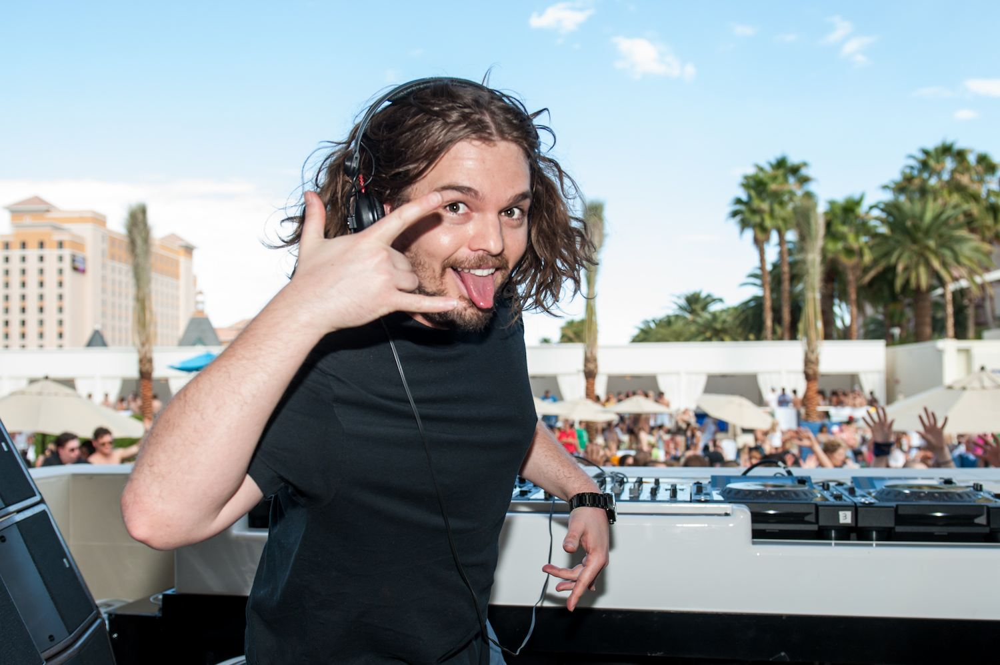

Thomas Olsen, aka Tommy Trash, is an Australian DJ currently residing in Los Angeles. The ARIA Music Awards of 2009 nomination of artist Tommy Trash, one of the EDM scene's biggest promises, is considered as one of the highlights of 2011.[1] Ever since he appeared on the scene in 2006, Tommy has been rocking the charts and the dance floors, and with over 50 productions (originals and remixes), and also he has quickly been recognised as one of Australia's biggest talents. His peak era would begin in mid-2011, thanks to one of his most recognisable tunes, titled "The End". This has been one of his largest hits to date. This made him quickly noticed by high-profile DJs such as Tiësto, David Guetta, Swedish House Mafia, Afrojack, and Laidback Luke. "The End" pushed Tommy further into international fame. Before "The End", he launched "All My Friends" in 2010, collaborating with Tom Piper and Mr. Wilson on the vocals, who has already lent his voice in Tommy's song, "Need Me To Stay", a song nominated by the ARIA Awards as a "Best Dance Record" in 2009. "All My Friends" managed to peak 6 weeks straight on the ARIA Club Charts. Due to its success, it was re-edited and remastered by Ministry of Sound on the United Kingdom and Germany, and peaked at 11 in the UK Cool Cuts chart. Tommy also launched his music on worldwide labels, such as Spinnin, Refune, SIZE, Axtone, mau5trap, OWSLA, Boys Noize, Musical Freedom and Fool's Gold. He has collaborated with other producers such as A-Trak. Digitalism, Sebastian Ingrosso and Wolfgang Gartner, and he has made remixes for artists like Deadmau5, Empire of the Sun, Swedish House Mafia, Sub Focus, Zedd, Steve Aoki, plus many more. In 2012, the 55th Annual Grammy Awards nominated Tommy for his remix of Deadmau5' song ""The Veldt"".[2]
Official Tommy Trash website: Click Here